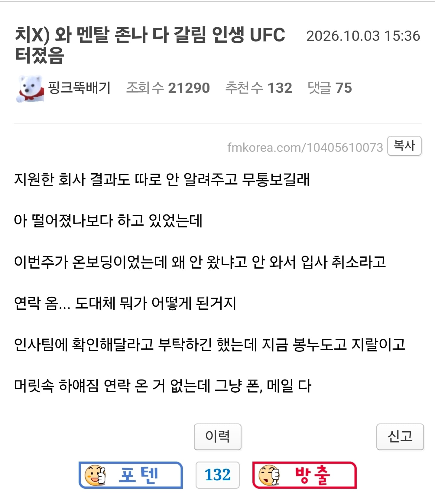
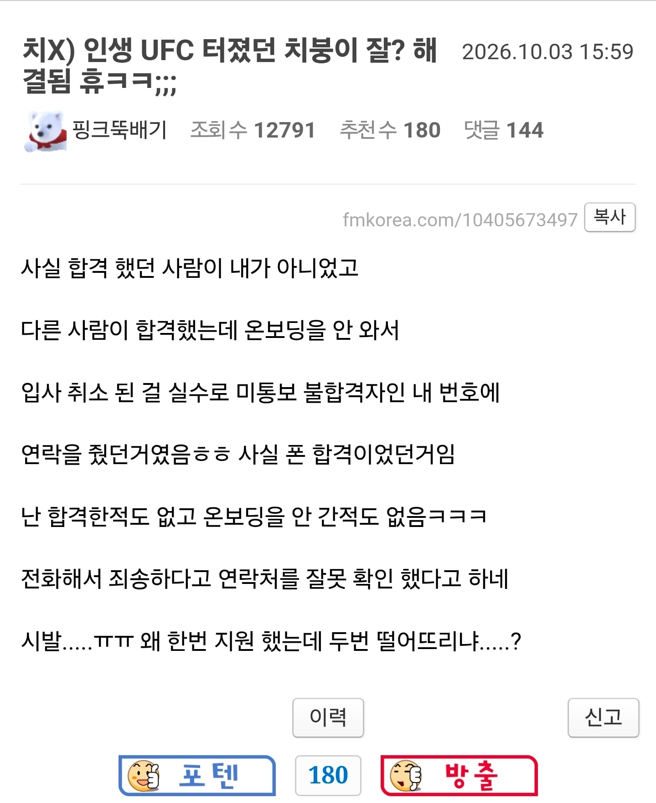

사실 진짜 합격이긴 했는데 찐빠나서 연락 안준거라 이렇게 되면 본인들 책임되니 그냥 불합격이라고 한거임
이면 더 화나겠지
야 이거 너무 잔인하다

진짜 너무하네
인사가 저정도면 붙어도 안가는게 정신적인 이득이 아닐까
개새끼들 저런 회사는 잘 걸른거임
온보딩이 뭐야
온고지보딩
신규 사원 교육하는 거
사실 합격인데 무통보로 합격 안된거 알려지면 안되서 구라치는거일듯
뭔 시부럴 온보딩은 뭔 소리야
3번 떨어뜨린거지
그거랑 별개로 탈락했으면 연락들 좀 줘라
무통보 탈락이 말이야 방구야
좆소 입장에선 통보안하는게 이득이라서 그래 탈주나면 아무렇지 않은 척 다음 지원자한테 연락하면 되거든..
시발색히가